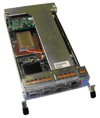
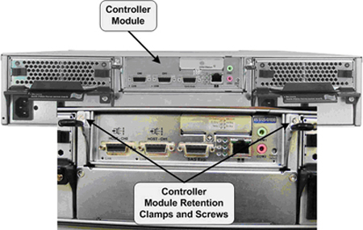
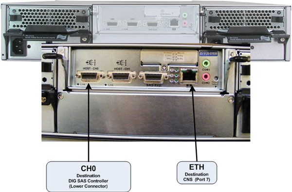

Operating Documentation
Direction 5193574-800, Rev# 22
LightSpeed 7.X Service Methods
Module Version 4.0, Version Date 5/23/14
Operating Documentation |
| Required Persons | Preliminary Reqs | Procedure | Finalization |
|---|---|---|---|
| 1 |
This procedure describes and illustrates the steps necessary to replace the High Speed Disk Array (HSDA) Controller Module (Illustration 1).
Illustration 1: High Speed Disk Array (HSDA) Controller Module

| Last revised: | May 23, 2014 |
| Item | Qty | Effectivity | Part# | Manufacturer | |
|---|---|---|---|---|---|
| Standard FE Toolkit | 1 | - | - | - | |
| Small Phillips Screwdriver | 1 | - | - | - | |
| Item | Qty | Effectivity | Part# | Manufacturer | |
|---|---|---|---|---|---|
| HSDA Controller Module | 1 | - | 5308763 | - | |
| ||||
| ELECTROCUTION HAZARD | ||||
| HIGH VOLTAGE PRESENT | ||||
| USE PROPER LOCKOUT / TAGOUT PROCEDURES BEFORE REPLACING THE COMPONENTS. |
| ||||
TO PREVENT DAMAGE TO COMPONENTS WITHIN THE HSDA, OBSERVE THE
FOLLOWING ESD PRECAUTIONS:
FOR FURTHER INFORMATION REGARDING ESD PROTECTION, REFER TO THE SAFETY CHAPTER IN THIS PUBLICATION | ||||
| ||||
| IN ORDER TO MEET EMC REQUIREMENTS, THE CHASSIS MODULES MUST BE PROPERLY INSTALLED AFTER SERVICING. CHECK THAT THE MODULES ARE MOUNTED FIRMLY IN PLACE AND LOCKED DOWN WHERE APPLICABLE. | ||||
| ||||
| FOLLOW ALL REQUIRED SAFETY AND PPE PROCEDURES CUSTOMARY FOR YOUR ORGANIZATION WHEN WORKING ON THIS PRODUCT. | ||||
| ||||
| UNDER NO CIRCUMSTANCES SHALL THE SYSTEM BE USED TO ACQUIRE DATA DURING THIS PROCESS! FAILURE TO FOLLOW THIS WARNING MAY RESULT IS CORRUPT OR LOST PATIENT DATA. | ||||
| Condition | Reference | Effectivity |
|---|---|---|
Access to both the front and rear of the Operator Console is required. Move the console away from walls and remove obstacles in room. | - | - |
Only trained service personnel should service the GE CT Scanner. | - | - |
Select one of the following methods to power off the Operator Console:
If Applications are running, click [Shut Down] and select Shut Down.
If Applications are down, open a Unix Shell using the Toolchest. Type: {ctuser@hostname} halt. Press <Enter>.
The Operator Console monitor will display a ‘System Halted’ message when it is acceptable to power off the Operator Console.
Power OFF the Operator Console at the front panel switch.
Illustration 2: Console Power Switch

Perform the prescribed Lockout/Tagout procedure. For added protection, disconnect the Twist-N-Lock Main Power Cable from rear of console.
Remove the Front and Rear Operator Console Covers per the prescribed cover removal procedure.
At the rear of the Operator Console remove the SAS and Network Cables from the HSDA.
Loosen and remove the two (2) Phillips screws holding the Controller Module Retention Clamps in place.
Illustration 3: HSDA Controller Module Mounting

Pull the two (2) Retention Clamps down and away from the Controller Module to extract the module from the HSDA Assembly.
Illustration 4: HSDA Controller Module Removal

Carefully remove the Controller Module and set aside.
Slide the replacement Controller Module into the HSDA Assembly Controller Module bay.
Make sure the Controller Module is securely inserted and replace the two (2) Phillips screws in the Retention Clamps.
| NOTE: | IN ORDER TO MEET EMC REQUIREMENTS, THE CHASSIS MODULES MUST BE PROPERLY INSTALLED AFTER SERVICING. CHECK THAT THE MODULES ARE MOUNTED FIRMLY IN PLACE AND LOCKED DOWN WHERE APPLICABLE. |
Reconnect the SAS and Network cables to the HSDA Controller Module.
Illustration 5: HSDA Controller Module Connections: HSDA 1 Connections

Illustration 6: HSDA Controller Module Connections: HSDA 2 Connections (HD Only)

Reconnect the Twist-N-Lock Main Power Cable from rear of console and remove Lockout/Tagout protection applied earlier.
Power ON the Operator Console at the console front panel switch.
Visually verify the HSDA Assembly LCD Panel Power LED is illuminated.
Illustration 7: HSDA LCD Panel

Do not allow Applications to start. During boot-up, cancel Application Startup when the CT Software Auto-start pop-up window appears.
Verify that the HSDA with replacement Controller Module has powered up and is not displaying any Errors.
| NOTE: | See HSDA Troubleshooting if any errors appear. |
In order to assure proper operation of the HSDA Assembly with its new Controller Module, perform the System Configuration procedure located in the applicable Align, Setup, Cals → Console folder of this service methods publication.
Do not allow Applications to start.
During boot-up, cancel Application Startup when the CT Software Auto-start pop-up window appears.
Open a Terminal window and log on as Root.
Verify the parameter of HSDA Controller Module
Type: rsh darc<Enter>
Type: lsscsi<Enter>
The following one SCSI device is displayed. In this instance, proceed to step Step 3.d.
[0:0:0:0] disk IFT S12S-G1030 371E/dev/sda
If two SCSI devices are displayed as shown below, proceed to next sub step Step 3.c.iii.
[0:0:0:0] disk IFT S12S-G1030 371E/dev/sda [0:0:1:0] disk IFT S12S-G1030 371E/dev/sda
Open Unix shell, then become “root”
Type java -jar /usr/g/scripts/raidcmd2.jar [ENTER]
Type connect darcarray [ENTER]
Type show host [ENTER] . Then, you can see below settings.
In-band External Interface: Enabled Maximum Queued I/O Count: 1024 LUNs per Host SCSI ID: 4 Max Number of Concurrent Host-LUN Connection: 4 Number of Tags Reserved for each Host-LUN Connection: 4
Peripheral Device Type Parameters:
Peripheral Device Type: No Device Present (Type=0x7f)
Peripheral Device Qualifier: Connected Device Supports Removable Media: Disabled LUN Applicability: All Undefined LUNs
Cylinder / Head / Sector: Cylinder: Variable Head: Variable Sector: Variable
If [Peripheral Device Type] is not No Device Present, please go to Step 3.c.vii to correct the setting.
Type set host dev-type=no-dev [ENTER]
To confirm setting, type show host [ENTER]. If it is not correct, repeat Step 3.c.vii.
Type reset controller [ENTER].
System ask below question. Hence, please type y.
Are you sure to Reset Controller ? (y or n) : y.
Type Exit.
Type: reconfig<Enter>
On the System Tab, select [Yes] on the Recreate Scan Disk Array and click [Accept].
| NOTE: | No other changes are required in the Preferences, Hardware, and Network settings. During the reconfiguration process the Scan Disk Array will be recreated. This will take approximately 20 minutes. |
After completing the System Configuration procedure, perform a complete shutdown of the Operator Console and restart the system.
Perform System Scanning Test to confirm proper operation.
Reinstall Console Front and Rear Covers.